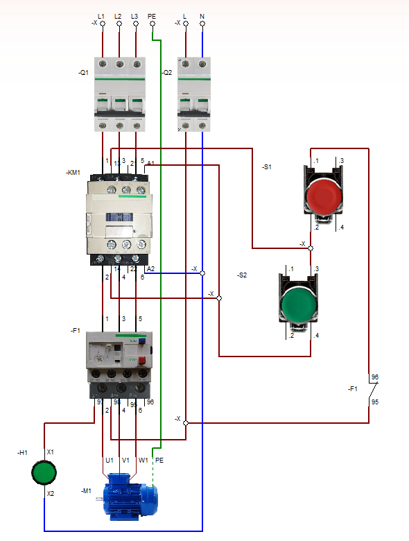
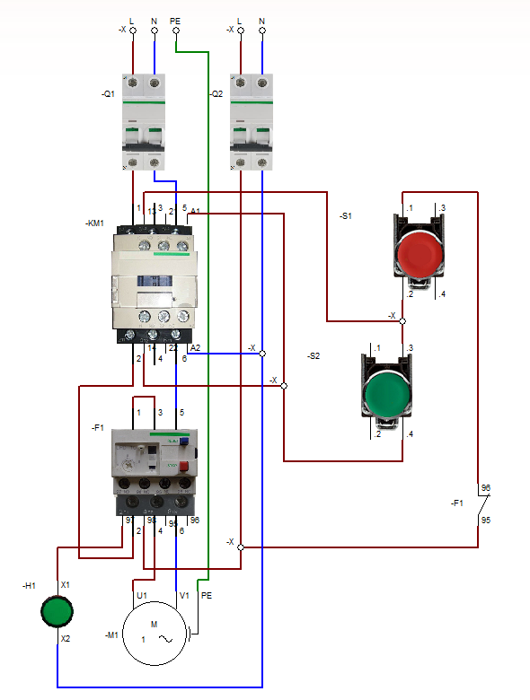

Misión
Hacer instalaciones seguras, prolijas y bien documentadas, para que el cliente sepa qué tiene instalado y cómo mantenerlo.
Somos Vortex. Diseñamos, documentamos y armamos instalaciones eléctricas para talleres y comercios: desde el primer tablero hasta el último botón de emergencia. En nuestro caso, nuestro cliente Bernardo Rius nos consultó para hacer la instalación eléctrica de su carpintería, el automatismo de sus máquinas, los tableros, el plan de mantenimiento y seguridad y el diseño 3D de una lijadora de banda para su taller.
Potencia y control, unidos.
Hacemos el proyecto eléctrico, el automatismo y el modelo 3D de las máquinas, con cálculos según la reglamentación, planos y la documentación de la obra.
Nuestro cliente: Bernardo Rius. Es el cliente que estamos atendiendo en este proyecto. En nuestro caso, nuestro cliente Bernardo Rius nos consultó para hacer la instalación eléctrica de su carpintería: el cálculo de los circuitos y de las fases, los tableros, el automatismo de sus máquinas, las cañerías y la bandeja, el plan de mantenimiento y seguridad, el diseño 3D de una lijadora de banda y el presupuesto de la obra. Todo lo que mostramos en esta página es el trabajo que hicimos para él.
Hacer instalaciones seguras, prolijas y bien documentadas, para que el cliente sepa qué tiene instalado y cómo mantenerlo.
Que este proyecto sea el punto de partida para seguir trabajando como equipo.
Planos y cálculos
Diseño eléctrico
Mantenimiento, higiene y seguridad
Diseño 3D y automatismo
Instalaciones monofásicas y trifásicas para comercios y talleres, con cada circuito justificado.
Principales, seccionales y de máquinas, ordenados y con cada protección identificada.
Mando de motores: arranque directo y con variador de frecuencia.
Pulsadores de emergencia, resguardos y enclavamientos.
Revisión de instalaciones, medición de la resistencia de puesta a tierra y un plan simple de controles.
Modelos y planos de máquinas y repuestos en FreeCAD.
Nosotros no nos limitamos solo a la instalación: damos todo un rediseño.
Un local de 12,30 × 25,30 m (312 m² sumando sus ambientes, grado de electrificación superior). El proveedor entrega 380 V en tres fases (R, S y T) y neutro al interruptor general del T.P. De ahí salen dos líneas: una al T.S. Oficina, donde están TUE1, IUG1 y TUG1, y otra al T.S. Taller, por un cable de 4 × 10 mm² con térmica de 32 A. Del T.S. Taller salen IUG2, IUG3, TUG2, TUE2 y las seis máquinas de 380 V, que usan las tres fases.
Se dibuja capa por capa: primero los muros, después las bocas de luz, los circuitos de cada fase y los tomas. Tocá una referencia para ver solo ese circuito. Pasá el mouse por el plano para verlo de cerca con la lupa (en el celular, mantené apretado y mové el dedo).
Valores de IMS: la corriente de cada circuito multiplicada por su factor de simultaneidad, que va de 0,6 a 1 según el uso. Reparto: R: TUE1 + IUG1 (15,70 A) · S: TUE2 + TUG1 (16,50 A) · T: TUG2 + IUG2 + IUG3 (16,63 A). Las máquinas de 380 V suman 12,85 A de IMS en cada fase. Con todo: R 28,55 A, S 29,35 A y T 29,48 A. La IMS total es de 29,48 A.
| Circuito | Tablero | Fase | Qué alimenta | Corriente | Factor | IMS | Térmica |
|---|---|---|---|---|---|---|---|
| IUG1 | T.S. Oficina | R | Negocio, oficina, baño y cocina · 9 bocas | 1,00 A | 0,7 | 0,70 A | 2 A |
| TUG1 | T.S. Oficina | S | Tomas de la oficina y la cocina | 10,00 A | 0,6 | 6,00 A | 10 A |
| TUE1 | T.S. Oficina | R | Aire acondicionado de la oficina | 15,00 A | 1 | 15,00 A | 16 A |
| IUG2 | T.S. Taller | T | Luces del taller · 9 campanas | 4,09 A | 1 | 4,09 A | 6 A |
| IUG3 | T.S. Taller | T | Luces del taller · 10 campanas | 4,54 A | 1 | 4,54 A | 6 A |
| TUG2 | T.S. Taller | T | Tomas del fondo del taller | 10,00 A | 0,8 | 8,00 A | 10 A |
| TUE2 | T.S. Taller | S | Compresor chico (monofásico) | 15,00 A | 0,7 | 10,50 A | 16 A |
| 380 V | T.S. Taller | R, S y T | Las seis máquinas, cada una con su tablero | 38,93 A | 0,33 | 12,85 A por fase | 4P de 10 o 16 A por máquina |
Corrientes y factores de simultaneidad de las hojas de cálculo del equipo. La IMS es la corriente por el factor, que depende de cuánto se usa cada circuito a la vez: 0,7 en IUG1 (no van a estar todas las luces prendidas), 1 en IUG2 e IUG3 (en el taller van todas), 0,6 en TUG1 (solo se usan los tomas de la oficina y la cocina; el del baño no), 0,8 en TUG2 (se usa la mayor parte, para el compresor y otras herramientas), 1 en TUE1 (es solo el aire acondicionado, al 100 %) y 0,7 en TUE2 (el compresor chico no trabaja siempre al máximo). Las seis máquinas suman 38,93 A por fase; como se usan 2 de las 6 a la vez, el factor es 2 / 6 = 0,33 y la IMS de las máquinas es de 12,85 A en cada fase.
| Máquina | Potencia | Placa | Corriente adoptada | Térmica en el seccional | Guardamotor en su tablero | |
|---|---|---|---|---|---|---|
| M1 | Lijadora | 2.200 W (3 HP) | Sin chapa · 220 / 380 V · 7,82 / 4,53 A (estrella) | 4,53 A | 4P 10 A | 4–6,3 A |
| M2 | Combinada | 4.811 W (5,5 HP) | 380 / 660 V · 8,6 A a 380 V (triángulo) | 8,60 A | 4P 16 A | 6–10 A |
| M3 | Escuadradora | 2.200 W (3 HP) | 220 / 380 V · 8,39 / 4,85 A (estrella) | 4,85 A | 4P 16 A | 4–6,3 A |
| M4 | Tupí | 2.200 W (3 HP) | 220 / 380 V · 5 A en estrella | 5,00 A | 4P 16 A | 4–6,3 A |
| M5 | Sierra sin fin | 2.200 W (3 HP) | 220 / 380 V · 8,5 / 4,95 A (estrella) | 4,95 A | 4P 16 A | 4–6,3 A |
| M6 | Compresor grande | 5.590 W (7,5 HP) | 220 / 380 V · 19 / 11 A (estrella) | 11,00 A | 4P 16 A | 9–14 A |
Los amperajes salen de las chapas de los motores, a 380 V. Las hojas del equipo comprueban cada chapa con la cuenta P = √3 × V × I × cos φ; si la cuenta no coincide con la chapa, manda la chapa: la tupí daba 3,93 A en la hoja y la chapa dice 5 A, y el compresor grande daba 9,99 A y la chapa dice 11 A. La lijadora no tiene chapa: usamos los datos de catálogo de un motor de 2,2 kW (WEG W22, 220 / 380 V, 4,53 A a 380 V). La escuadradora usa los de su chapa Czerweny: 4,85 A. La combinada va en triángulo y las otras cinco en estrella. Cada máquina tiene su propio tablero de mando (contactor y guardamotor). En el T.S. Taller solo están las térmicas 4P que alimentan esos tableros: 10 A para la lijadora y 16 A para las demás, que dejan pasar el arranque sin saltar. Todas llevan cable de 4 × 4 mm² con tierra, que soporta 24 A. Las seis máquinas suman 38,93 A por fase; como se usan 2 de las 6 a la vez, el factor es 2 / 6 = 0,33 y la IMS de las máquinas es de 12,85 A en cada fase.
| Circuito | Fase | IMS | Térmica | Cable | Admisible (Iz) | Tierra |
|---|---|---|---|---|---|---|
| IUG1 (T.S. Oficina) | R | 0,70 A | 2 A | 2,5 mm² | 18 A | 2,5 mm² |
| TUG1 (T.S. Oficina) | S | 6,00 A | 10 A | 2,5 mm² | 18 A | 2,5 mm² |
| TUE1 (T.S. Oficina) | R | 15,00 A | 16 A | 2,5 mm² | 18 A | 2,5 mm² |
| IUG2 (T.S. Taller) | T | 4,09 A | 6 A | 2,5 mm² | 18 A | 2,5 mm² |
| IUG3 (T.S. Taller) | T | 4,54 A | 6 A | 2,5 mm² | 18 A | 2,5 mm² |
| TUG2 (T.S. Taller) | T | 8,00 A | 10 A | 2,5 mm² | 18 A | 2,5 mm² |
| TUE2 (T.S. Taller) | S | 10,50 A | 16 A | 2,5 mm² | 18 A | 2,5 mm² |
| T.P. → T.S. Taller | R, S, T y N | 29,48 A | 4P 32 A | 4 × 10 mm² | 43 A | 10 mm² |
| Cada máquina trifásica (M1 a M6) | R, S y T | hasta 11,00 A | Térmica 4P de 10 o 16 A | 4 × 4 mm² | 24 A | PE dentro del cable |
| Alimentación (medidor → T.P.) | R, S, T y N | 29,48 A | 4P 32 A | 4 × 10 mm² | 43 A | 10 mm² |
Regla: IMS del circuito ≤ térmica ≤ corriente admisible del cable. Las secciones son las de la hoja del equipo: 2,5 mm² en todos los circuitos de 220 V (iluminación, tomas generales y tomas especiales), que soportan 18 A, y 4 mm² en el cable de cada máquina, que soporta 24 A. Un circuito TUG admite hasta 20 A: por eso los tomas del taller van en TUG1 y TUG2. La línea al taller lleva 29,48 A en la fase más cargada y su térmica de entrada es de 32 A, igual que el general; el cable de 4 × 10 mm² soporta 43 A, más que los 32 A de la térmica. La mayor caída de tensión es la de TUE2, 1,22 %; en iluminación, la de IUG3, 0,88 %, por debajo del 3 %. Entre las dos térmicas de 32 A no hay selectividad; el equipo decidió dejarla así.
IUG1 (amarillo en el plano, 9 bocas, 1 A, fase R, térmica de 2 A) cubre el negocio, la oficina, el baño y la cocina y sale del T.S. Oficina. IUG2 (violeta, fase T, 9 campanas, 4,09 A) e IUG3 (azul, fase T, 10 campanas, 4,54 A) son las campanas LED de 100 W del taller, con térmica de 6 A y salen del T.S. Taller.
=F5/I5| A | B | C | D | E | F | G | H | I | J | K | |
|---|---|---|---|---|---|---|---|---|---|---|---|
| 3 | Tramo | Circuito | Cables | Sección (mm²) | Ø cable (mm) | Área cables (mm²) | Caño | Ø interior (mm) | Área caño (mm²) | Ocupación | ¿Cumple? (≤ 35 %) |
| 4 | T.S. Oficina → negocio, oficina, baño y cocina | IUG1 | 3 | 2,5 | 3,8 | 34,0 | CL16 | 12,5 | 122,7 | 27,7 % | Sí |
| 5 | T.S. Oficina → tomas de la oficina y la cocina | TUG1 | 3 | 2,5 | 3,8 | 34,0 | CL16 | 12,5 | 122,7 | 27,7 % | Sí |
| 6 | T.S. Oficina → aire acondicionado | TUE1 | 3 | 2,5 | 3,8 | 34,0 | CL16 | 12,5 | 122,7 | 27,7 % | Sí |
| 7 | Medidor → T.P. (alimentación) | Alimentación | 5 | 10 | 7,0 | 192,4 | CL32 | 28,5 | 637,9 | 30,2 % | Sí |
Tocá una celda calculada para ver su fórmula. Ocupación máxima: 35 % de la sección interior del caño.
Caño de acero semipesado, nombrado por su diámetro en milímetros: CL16 (16 mm) en la oficina y CL32 (32 mm) en la alimentación. Con 2,5 mm², TUE1 entra en el CL16 (27,7 %). En el taller los cables van por la bandeja perforada que recorre la parte izquierda, con la T hacia las tres hileras de luces. Los cables de las seis máquinas van aparte, por un pisoducto Samet de 150 × 50 mm embutido en el contrapiso, con una caja de 300 × 300 mm a ras del piso junto a cada máquina.
Elegí un tablero o un esquema. Los topográficos muestran el frente de cada gabinete sin puerta, con cada aparato en su lugar; el unifilar y el multifilar están dibujados en AutoCAD.
Es el primer tablero de la instalación y está en el pilar, junto al medidor. La acometida son cuatro cables (R, S, T y N) que vienen de los postes de la distribuidora y entran por un caño en la parte de arriba del pilar hasta el medidor. Del medidor pasan al interruptor general tetrapolar de 32 A, el único aparato del tablero, que reparte R, S, T y N hacia los dos seccionales. A cada lado del general quedan cuatro módulos libres de reserva.

Se lee de arriba hacia abajo, en tres filas de riel DIN separadas por cablecanales ranurados. Arriba está la entrada, la térmica tetrapolar (TETRA) que llega del general del T.P. En la fila del medio van los diferenciales ID S e ID R. Abajo están las térmicas de los circuitos: TUG1 debajo del ID S, e IUG1 y TUE1 debajo del ID R. Las flechas de color indican qué diferencial alimenta a cada térmica.

Sigue el mismo orden de tres filas, en un gabinete más ancho. Las cuatro líneas llegan del T.P. por un cable de 4 × 10 mm² y entran por la térmica tetrapolar de arriba (TETRA). En la fila del medio están los diferenciales de los circuitos del taller, ID S (para TUE2) e ID T (para TUG2, IUG2 e IUG3), y el diferencial tetrapolar ID 4P de las máquinas. En la fila de abajo, a la izquierda, van las térmicas de TUE2, IUG2, TUG2 e IUG3; a la derecha, las seis térmicas tetrapolares de las máquinas, rotuladas LIJA, ESCUA, CIERR, COMBI, TUPI y COM.G. Cada una alimenta el tablero propio de su máquina, donde están el arranque y la protección del motor.

Todo el sistema en un solo dibujo, una línea por circuito: el medidor y el general; el T.S. Oficina con su térmica de 16 A y un diferencial en R y otro en S; el T.S. Taller con su térmica de 32 A, un diferencial en S y otro en T, el diferencial 4P de las máquinas y la térmica de cada una. Es el mismo orden que tienen los aparatos en los topográficos.
Todas las térmicas y diferenciales son de GE: térmicas G60 curva C de 6 kA (G62 bipolares y G64 tetrapolares) y diferenciales BPC de 30 mA. Cada protección es la del calibre inmediato superior a la IMS que protege: el general y la entrada del T.S. Taller, 32 A (IMS 29,48 A); la entrada del T.S. Oficina, 16 A (IMS 15,70 A); el diferencial de las máquinas, 25 A (IMS 12,85 A).

Nuestro multifilar dibuja todos los tableros juntos y cada conductor con su color: el T.P. con el medidor y el general, el T.S. Oficina y el T.S. Taller con todas sus térmicas y diferenciales. Sirve para seguir cada fase desde el medidor hasta el borne de cada circuito y de cada máquina.

Pasá el mouse por el dibujo para verlo con la lupa.
El arranque directo conecta el motor a la red mediante el contactor KM1. Q1 protege el motor y Q2 el circuito de mando. S2 da marcha y KM1 se autorretiene con su contacto auxiliar; S1 detiene el motor. Si hay sobrecarga, F1 abre el mando. H1 indica funcionamiento.


Cinco máquinas trabajan la madera en la Carpintería Bernardo Rius. Todas son trifásicas y cada una tiene su propio tablero con arranque, guardamotor y parada de emergencia.
Un motor trifásico de 2,2 kW hace girar una banda de lija cerrada que corre entre dos ruedas. Al apoyar la pieza sobre la banda, el abrasivo arranca material por fricción: así se desbasta, se alisa y se sacan rebabas, tanto en madera como en metal.
Es la máquina que modelamos en FreeCAD. Dos columnas de acero sostienen las ruedas de Ø600 × 160 a 4 m entre ejes, y por ellas corre una banda de lija de 150 mm y 9.885 mm de desarrollo. El motor de 3 HP mueve la rueda motriz con poleas de 90 y 315 mm y dos correas en V: la rueda gira a 792 rpm y la lija corre a 24,9 m/s. La mesa de 3,40 m sube y baja con cuatro gatos de tornillo que se mueven juntos con un volante.
Un disco de sierra circular corta tableros y piezas en línea recta. La madera se apoya en la mesa y avanza contra una regla, así el corte sale a escuadra o en ángulo y a la medida justa.
2.200 W · 3 HP · 2.772 rpm
Una cinta de acero dentada y cerrada gira entre dos volantes. Como la hoja es fina, corta recto y también en curva; con la hoja indicada sirve para metal.
2.200 W · 3 HP · 1.395 rpm
Junta dos sistemas de corte en una sola máquina, por lo general una sierra circular y una sin fin, movidos por el mismo motor. Hace cortes rectos y curvos sin cambiar de equipo.
5,5 HP · 8,6 A a 380 V · 1.430 rpm
Un eje vertical hace girar una fresa a gran velocidad. La pieza se pasa contra la herramienta con guía y así se hacen ranuras, molduras, rebajes y bordes con forma.
2.200 W · 3 HP · 2.850 rpm
Arrastrá para girar la lijadora, usá los botones + y − para acercarte y ↻ (o doble clic) para volver a la vista inicial.


Las dos láminas salen del modelo de FreeCAD. Cada pieza del despiece lleva su número y la lista tiene las medidas tomadas del modelo. Pasá el mouse por los planos para verlos con la lupa.
Proyecto (cálculos, planos, unifilar y lista de materiales), montaje completo, pruebas al terminar (puesta a tierra, protecciones y cada máquina), entrega de la documentación con el plan de mantenimiento y 6 meses de mantenimiento de toda la instalación, que hacemos nosotros sin costo extra.
15 días corridos. Pasado ese plazo revisamos los precios de los materiales.
Se compran con el anticipo. Si el cliente prefiere comprarlos él, se descuentan del presupuesto y la garantía cubre solo la mano de obra.
Todo cambio pedido después de aprobado el proyecto se presupuesta aparte antes de hacerlo.
Acceso al local en los horarios acordados y aviso de las máquinas o materiales que no se puedan mover.
No hacemos trabajos con tensión: mientras intervenimos un tablero, ese sector queda sin energía.
12 meses sobre la mano de obra desde la entrega. Los materiales tienen la garantía de su fabricante.
Instalamos y probamos la alimentación y el mando de cada máquina. No nos hacemos cargo de roturas o fallas de las máquinas que aparezcan después de nuestro trabajo: el estado mecánico y el uso de cada máquina son responsabilidad del cliente.
Daños por descargas atmosféricas, cortes o sobretensiones de la red, golpes, humedad, agua, mal uso, sobrecargas, o cambios y arreglos hechos por otras personas sobre nuestra instalación.
Si al abrir paredes o tableros encontramos cables viejos, caños rotos o fallas que no se veían antes, avisamos y los presupuestamos aparte. No seguimos sin la aprobación del cliente.
El pedido de medidor y el cambio de potencia contratada corren por cuenta del cliente. Si hace falta, preparamos la documentación técnica que pidan.
Incluido en el precio: durante los 6 meses siguientes a la entrega hacemos nosotros el mantenimiento de toda la instalación (tableros, protecciones, cables, tomas, luminarias y el mando de las máquinas), siguiendo el plan de mantenimiento. Después de los 6 meses lo podemos seguir haciendo con un acuerdo aparte.
Las fechas se corren si faltan materiales, si el local no está disponible o por lluvias cuando hay trabajo afuera. Avisamos cualquier atraso apenas lo sabemos.
Transferencia bancaria o efectivo. Cada pago se entrega con su recibo.
El plano eléctrico del taller.
Todo el proyecto explicado, de la empresa al presupuesto.
IUG, TUG, TUE y cañerías.
Cómputo de materiales con el precio y la tienda de cada uno, rubros, total y planes de pago.
Fases, secciones de cables, máquinas de 220 y 380 V, superficie y nuestras hojas pasadas en limpio.
El unifilar del equipo con nuestras correcciones, en AutoCAD.
T.P., T.S. Oficina y T.S. Taller en un solo plano, con los colores de cada fase.
Las protecciones en el riel, como se ven al abrir el tablero.
Las protecciones en el riel, como se ven al abrir el tablero.
Arranque directo con autorretención, mando y potencia.
Arranque directo con autorretención, mando y potencia.
Lámina A3 con la vista explotada numerada y la lista de piezas con sus medidas.
La misma lámina de despiece, para abrir y editar en AutoCAD.
Frente, lateral y planta acotadas, sacadas del modelo de FreeCAD.
El modelo de FreeCAD para girarlo en cualquier visor 3D.
Las 27 piezas de la lijadora con medidas y material.
Quiénes somos, cómo trabajamos y qué hacemos.
Las 41 diapositivas de la defensa, con animaciones.
Contanos qué máquinas tenés y te enviamos una propuesta con cálculo, plano y presupuesto.